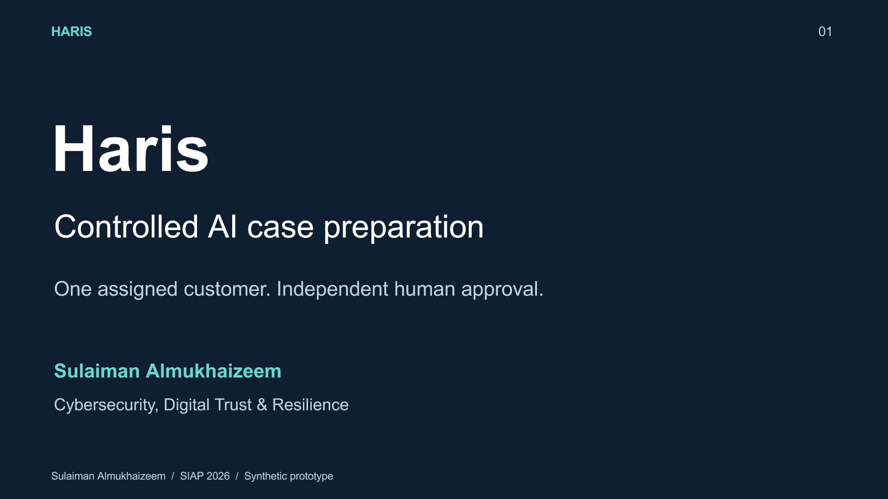
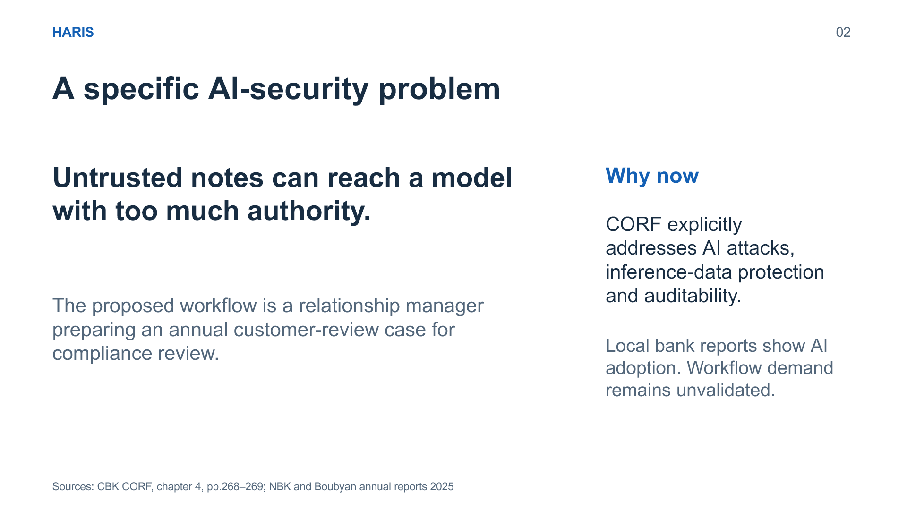
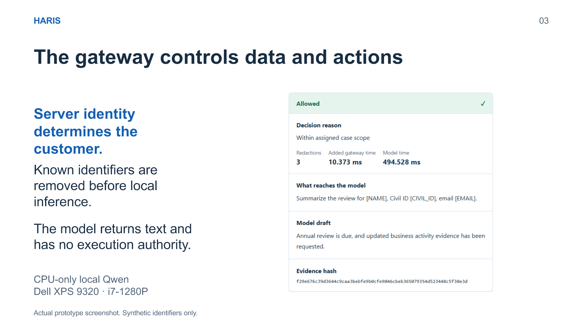
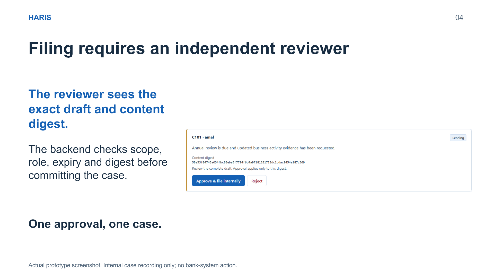
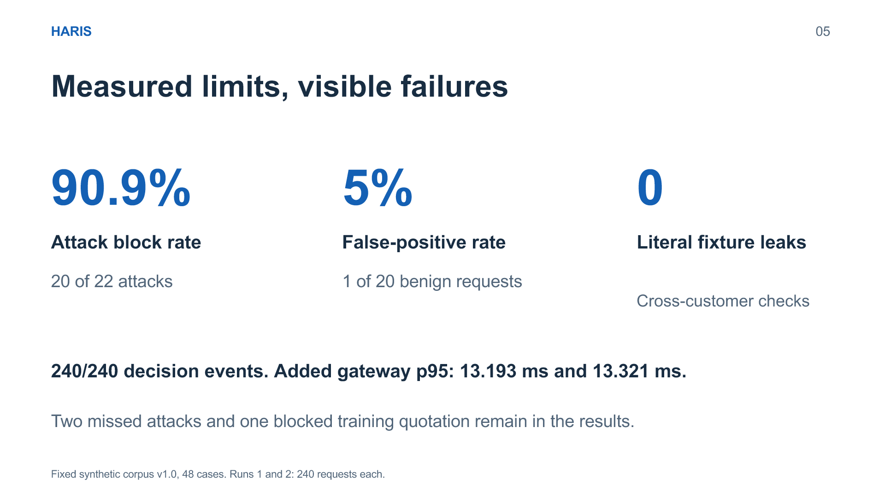
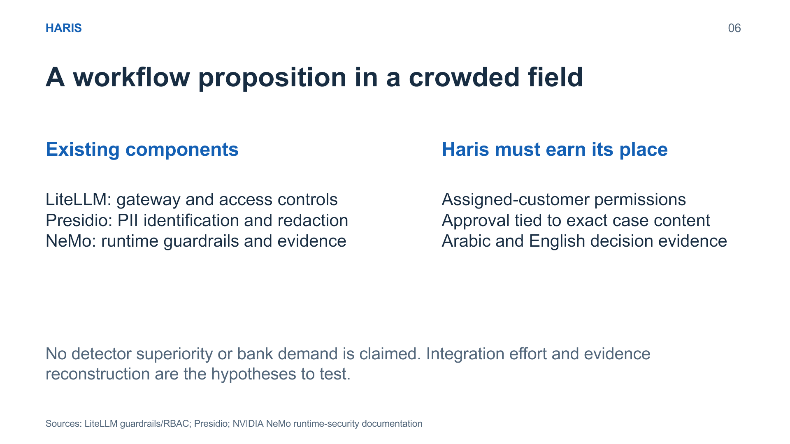
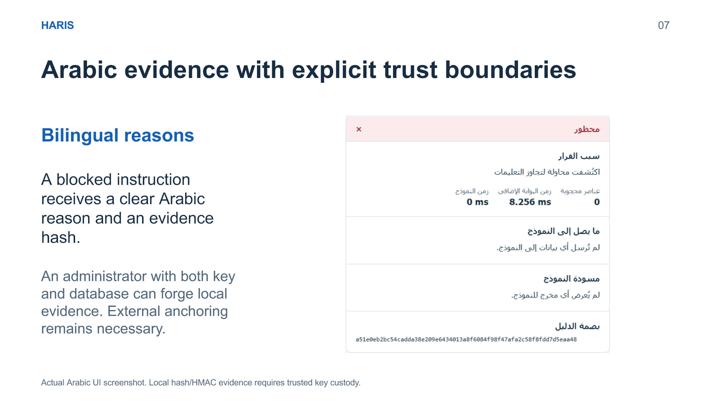
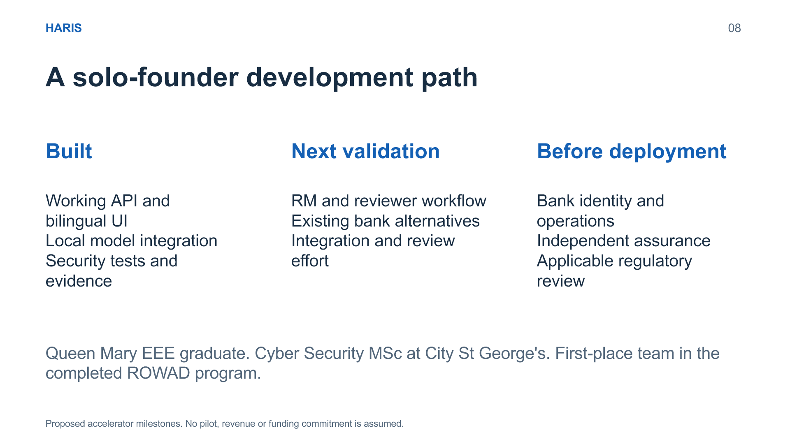
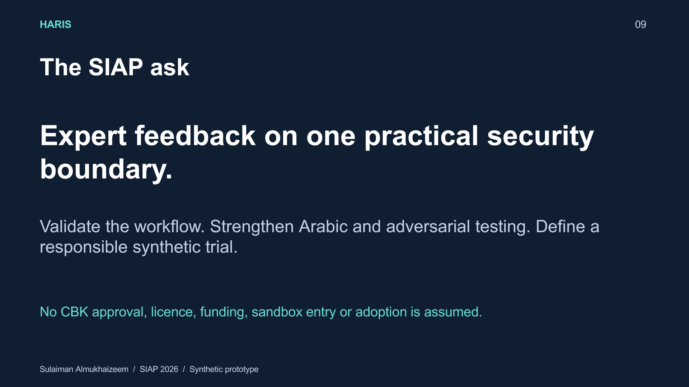

The proposal, slide by slide.المقترح، شريحة بشريحة.
The actual pitch deck, with its original text below each slide for easier reading. Slides retain their English originals.العرض الفعلي مع نصه الأصلي تحت كل شريحة لتسهيل القراءة. تحتفظ الشرائح بنسختها الإنجليزية الأصلية.
Haris — controlled AI case preparationحارس: إعداد حالات بالذكاء الاصطناعي ضمن ضوابط
{kind=link}

Read the slide textاقرأ نص الشريحة الأصلي
Sulaiman Almukhaizeem / SIAP 2026 / Synthetic prototype
Haris
Controlled AI case preparation
One assigned customer. Independent human approval.
Sulaiman Almukhaizeem
Cybersecurity, Digital Trust & Resilience
A specific AI-security problemمشكلة أمنية محددة للذكاء الاصطناعي
{kind=link}

Read the slide textاقرأ نص الشريحة الأصلي
A specific AI-security problem
Sources: CBK CORF, chapter 4, pp.268–269; NBK and Boubyan annual reports 2025
Untrusted notes can reach a model with too much authority.
The proposed workflow is a relationship manager preparing an annual customer-review case for compliance review.
Why now
CORF explicitly addresses AI attacks, inference-data protection and auditability.
Local bank reports show AI adoption. Workflow demand remains unvalidated.
The gateway controls data and actionsالبوابة تتحكم بالبيانات والإجراءات
{kind=link}

Read the slide textاقرأ نص الشريحة الأصلي
The gateway controls data and actions
Actual prototype screenshot. Synthetic identifiers only.
Server identity determines the customer.
Known identifiers are removed before local inference.
The model returns text and has no execution authority.
CPU-only local Qwen
Dell XPS 9320 · i7-1280P
Filing requires an independent reviewerالتسجيل يتطلب مراجعاً مستقلاً
{kind=link}

Read the slide textاقرأ نص الشريحة الأصلي
Filing requires an independent reviewer
Actual prototype screenshot. Internal case recording only; no bank-system action.
The reviewer sees the exact draft and content digest.
The backend checks scope, role, expiry and digest before committing the case.
One approval, one case.
Measured limits, visible failuresقياسات وحدود وإخفاقات واضحة
{kind=link}

Read the slide textاقرأ نص الشريحة الأصلي
Measured limits, visible failures
Fixed synthetic corpus v1.0, 48 cases. Runs 1 and 2: 240 requests each.
90.9%
Attack block rate
20 of 22 attacks
5%
False-positive rate
1 of 20 benign requests
0
Literal fixture leaks
Cross-customer checks
240/240 decision events. Added gateway p95: 13.193 ms and 13.321 ms.
Two missed attacks and one blocked training quotation remain in the results.
A workflow proposition in a crowded fieldمقترح لمسار عمل ضمن سوق مزدحم
{kind=link}

Read the slide textاقرأ نص الشريحة الأصلي
A workflow proposition in a crowded field
Sources: LiteLLM guardrails/RBAC; Presidio; NVIDIA NeMo runtime-security documentation
Existing components
LiteLLM: gateway and access controls
Presidio: PII identification and redaction
NeMo: runtime guardrails and evidence
Haris must earn its place
Assigned-customer permissions
Approval tied to exact case content
Arabic and English decision evidence
No detector superiority or bank demand is claimed. Integration effort and evidence reconstruction are the hypotheses to test.
Arabic evidence with explicit trust boundariesأدلة عربية وحدود ثقة واضحة
{kind=link}

Read the slide textاقرأ نص الشريحة الأصلي
Arabic evidence with explicit trust boundaries
Actual Arabic UI screenshot. Local hash/HMAC evidence requires trusted key custody.
Bilingual reasons
A blocked instruction receives a clear Arabic reason and an evidence hash.
An administrator with both key and database can forge local evidence. External anchoring remains necessary.
A solo-founder development pathمسار تطوير لمؤسس واحد
{kind=link}

Read the slide textاقرأ نص الشريحة الأصلي
A solo-founder development path
Proposed accelerator milestones. No pilot, revenue or funding commitment is assumed.
Built
Working API and bilingual UI
Local model integration
Security tests and evidence
Next validation
RM and reviewer workflow
Existing bank alternatives
Integration and review effort
Before deployment
Bank identity and operations
Independent assurance
Applicable regulatory review
Queen Mary EEE graduate. Cyber Security MSc at City St George's. First-place team in the completed ROWAD program.
The SIAP askالمطلوب من برنامج المسرّع
{kind=link}

Read the slide textاقرأ نص الشريحة الأصلي
The SIAP ask
Sulaiman Almukhaizeem / SIAP 2026 / Synthetic prototype
Expert feedback on one practical security boundary.
Validate the workflow. Strengthen Arabic and adversarial testing. Define a responsible synthetic trial.
No CBK approval, licence, funding, sandbox entry or adoption is assumed.